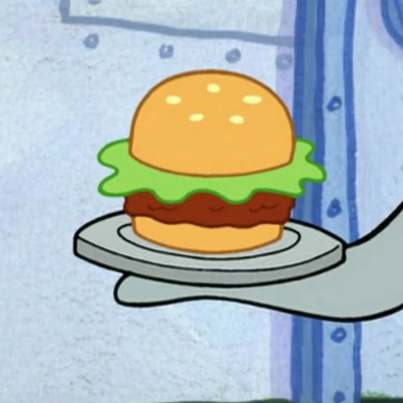

Krabby Patty

Description
Although Mr. Krabs doesn't reveal the exact formula, he does give a hint that a secret ingredient is plankton! You might not want to include that one!
Ingredients
- 1 pound crabmeat
- 1 egg, lightly beaten
- 1/2 cup breadcrumbs
- 4 cup mayonnaise
- 2 tablespoons minced chives
- 1 tablespoon Dijon mustard
- 1 tablespoon lemon juice
- 1 teaspoon celery seed
- 1 teaspoon onion powder
- 1/4 teaspoon freshly ground pepper
- 1/4 teaspoon of cayenne pepper
- Hot sauce/Tabasco sauce to taste
- 1 tablespoon extra-virgin olive oil
- 2 teaspoons unsalted butter
Steps
- Mix crab, egg, breadcrumbs, mayonnaise, chives, mustard, lemon juice, celery seed, onion powder, pepper and hot sauce in a large bowl.
- Form into 6 patties.
- Heat oil and butter in a large nonstick skillet over medium heat until the butter stops foaming.
- Cook the patties until golden brown, about 4 minutes per side.